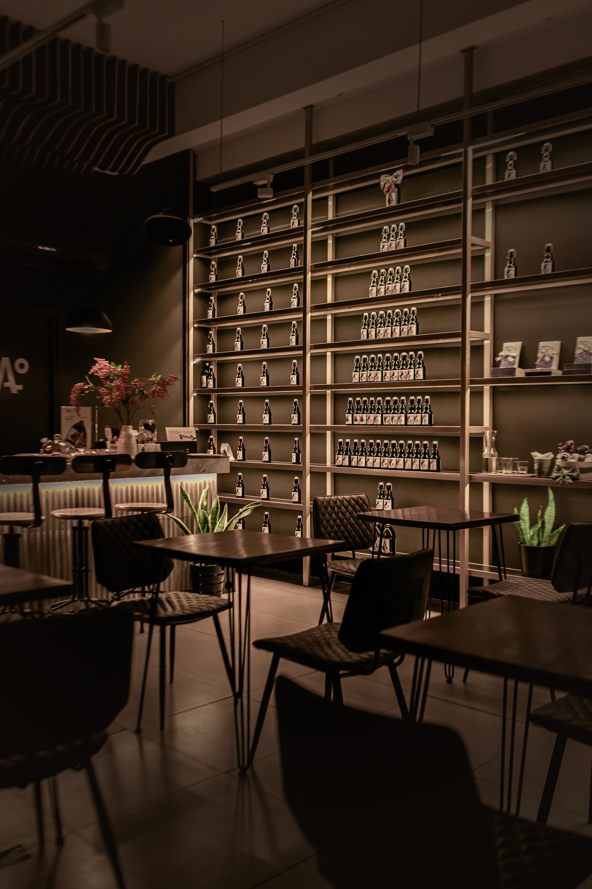

Tres lugares emblemáticos, el mismo café de especialidad. Encuentra el rincón perfecto cerca de ti.
Encuéntranos
Dónde encontrarnos

Sede Centro, frente a la plaza principal.
Sede Centro
Un espacio cómodo, limpio y ordenado, con música suave y una atención cercana. Ideal para conversar, estudiar o simplemente descansar con un buen café.
Información y Ubicación
Dirección: Calle 10 # 5-20
Horario: Lunes a Sábado de 7:00 a 20:00 | Domingos de 8:00 a 18:00
Teléfono: (601) 555 0101
Correo: centro@cafealtiplano.com
Servicios: Wi-Fi gratis, música ambiental y mesas para grupos.